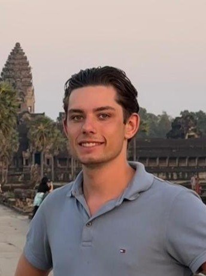

Mechatronica Engineer
Hardware, Mechanica, Automatisering
Over mij
Mijn naam is Daan van Beelen — een technicus die zijn handen graag vuil maakt, zowel in elektronica en hardware als mechanisch werk. Ik vind het erg leuk om dingen te maken en te bouwen, en ben ervan overtuigd dat de beste manier om te leren is door te doen. Ik ben altijd op zoek naar nieuwe uitdagingen, zowel op het werk als privé. Die drang om mezelf te blijven ontwikkelen is ook precies de reden waarom ik deze site heb willen maken — en hem helemaal zelf heb gebouwd en host. Ik hoop dat je hier een goed beeld krijgt van wie ik ben en wat ik kan.
Wat ik gebouwd heb
Wat ik kan
Mijn pad
Bekijk mijn werk
Dit is een van mijn projecten, en deze heb ik gefilmd om het vast te leggen. Hierbij vervang ik een groot deel van het elektrische systeem: de accu's, de balancer die zorgt dat de accu's gelijkmatig worden leeggetrokken en opgeladen, de controller, en daarbij alle draden op maat gemaakt en een nieuwe oplader geplaatst. We hebben dit alles vervangen omdat we af wilden van het NIU-systeem, omdat er een storing in de controller zat. Door onze aanpassing kunnen we nu gemakkelijk elke accu in de scooter zetten, zonder dat die van NIU hoeft te zijn.